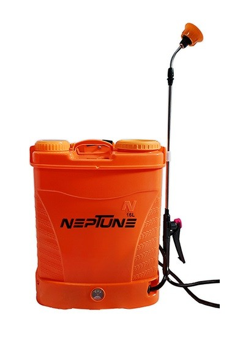
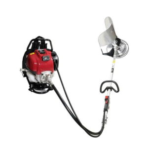
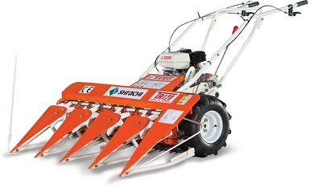
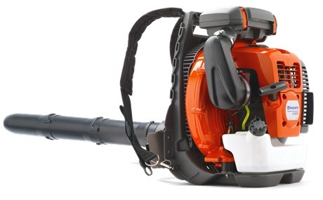
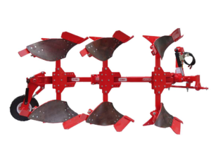

Sprayer
Sprayer hugely used for farming purposes to prevent the crops from pests. It comes in different variants of sprayers present in the markets that include petrol, battery, backpack sprayer, Knapsack sprayer, and manual sprayers. These all used for spraying fertilizers and pesticides in the farming areas. It is suitable to grow a healthy crop and free from insects and pests. Nowadays, sprayers made an important farm tool for effective production.
Brush Cutter
A brush cutter is a tool for effective agriculture work. It used to trim small trees, harvest crops, cut weeds, and other foliage. There are 3 types of brush cutters that are Handheld, Walk-Behind, and Tow-Behind. Brushcutter comes with an engine that supports the body and gives the energy to a rotary cutting head. Other parts are the trimmer head, handle, brush cutter blade, and brush cutter shaft.
Power Weeder

The Power Weeder used to eliminate weeds in vegetable gardens, Vineyard plantations, and basins of orchard trees. Power weeders are slightly getting popular among the farmers for their ease in farming activity. It comes with diesel engines with them. For power weeders, there are a variety of attachments present in the market. It is a multipurpose machine.
Power Tiller

A Power Tiller is a machine used for cultivation in farming that includes weeding, sowing, cultivation, and tillage. It comes with a set of blades mounted with an electric motor and a wheeled housing. Power Tiller mainly a set of blades that are called tines. You can call it in different names that include rotary tiller, plough, a rotavator, and rotary hoe.
Power Reaaper
Power Reaper is a machine that provides effective work on the field. It is a process that needs human power, why you have to spend more on labor. Power Reaper is a multitasker that can do various functions with less effort. It can harvest and cut the crops easily. Power reaper comes with large tyres, and it makes proper balance on the uneven surface.
Earth Auger

An Earth Auger used to dig on the earth. It is a drilling tool used for making holes on the surfaces or ground. It mainly includes a rotating helical screw blade. Earth Auger used in farming activities to dig holes in the soil, holes utilized for plantation purposes. It takes less time to dig the ground with an earth auger, and it takes less time. This machine comes in various sizes and petrol variants. Handy earth augers can dig approximately 3 feet depth on the earth..
Momers & Trimmers
Mowers and trimmers used to cut and trims the crops. It mainly used for gardening purposes. It comes in a different variant, and a string trimmer cleans the lawn, and a hedge trimmer is suitable to trim hedges and provides the perfect shape. This machine is eco friendly and easy to use.
Plough
Plough is a large implement and comes in the farming tools. It is called a plow too. Plough is a farming tool used for loosening the soil planting and sowing seed. It is of wooden iron or steel frame and comes with a blade to cut and loosen the soil.